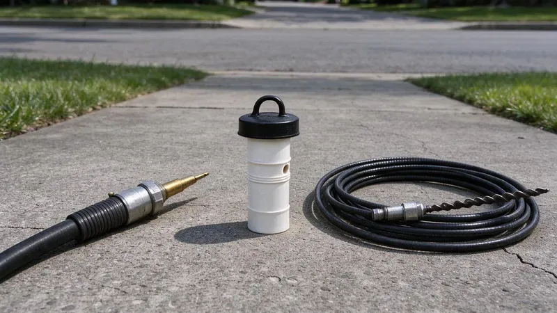

What Is Actually in the Pipe
Before we pick a tool, we want to know what the clog is made of. A toilet that stopped after one flush of wipes is a different problem from a kitchen line that has been slowing for a year. Roots and grease call for different tools. The history tells us a lot.
Much of Georgia sits on heavy red clay that swells when wet and shrinks in drought, which can stress slab plumbing and sewer laterals over time.
Ground movement opens joints, and open joints let roots in. A root mass in a sewer line is one of the most common reasons a cable machine comes back out wrapped in fibers. That tells us the job is bigger than a clear-out. Roots regrow fast.
Drain Snaking: The Standard First Step
A drain snake, also called an auger or a cable machine, is a long coiled steel cable with a cutting head on the end. It goes into the line, a motor turns it, and the cutter chews through the blockage. Most calls take under an hour. For a sink or tub, a small handheld unit with quarter-inch or 3/8 cable does the job. On a main line we use a bigger unit with 1/2 or 3/4 inch cable and a cutter sized to the pipe.
- Good for: hair, wipes, a single hard blockage, light roots
- Limits: opens a channel but leaves grease and scale on the pipe walls
- Price: usually the lower-cost option
The weakness is that a snake opens a hole but does not clean the pipe. In a 4-inch pipe lined with grease, the cable cuts maybe a 2-inch path that works for a few weeks before it starts to slow again. Then the remaining grease catches more debris and the clog comes back. Repeat calls are the sign.
Hydro Jetting: Cleaning the Whole Pipe
A hydro jetter pushes water through a hose at 3,000 to 4,000 psi on a typical residential line. The nozzle has rear-facing jets that pull it forward up the line and scour the pipe wall all the way around as it goes. It cuts grease and sludge off the walls. It shears roots right back to the joint.
Homes farther south often draw from deep limestone aquifers, so harder water and the occasional sulfur smell are common complaints there.
Scale and grease are where jetting really earns its cost. Inside cast iron, mineral scale narrows the bore and gives grease a rough surface to grab. A descaling nozzle on the jetter brings the pipe back near its original size, so it stays clear for a year or longer, not a few weeks. Commercial kitchens jet on a schedule.
- Good for: grease, sludge, scale, recurring roots
- Limits: needs a camera check first on old or fragile pipe
Choosing Between Them
A first-time clog in a single fixture almost always gets a snake. It is faster and costs less, and usually that is all it takes. When the same line clogs again in a few months, or the cable cannot get through, we run a camera and then usually jet it. The camera decides.
A large share of Georgia homes were built during the postwar and suburban growth decades, with copper supply lines and cast iron or early plastic drains.
Pipe condition limits the choice. Full-pressure jetting in cracked clay or rusted-through cast iron can open the damage further and turn a cleaning into a dig. On older lines we camera first, then jet at lower pressure or snake if the pipe is too far gone. PVC and newer cast iron handle full pressure fine.
Booking the Right Service
Tell the dispatcher which drains are slow and how long it has been happening. That one detail usually tells us which truck to send. Our trucks at HGR Plumbing carry both cable machines and jetters across Georgia, so the tech can switch methods on the same visit if the camera calls for it. You can reach us at (770) 470-3778. It helps to mention past root trouble or recent remodeling.
Need a licensed plumber in Georgia?
HGR Plumbing answers 24/7 and offers same-day service across Georgia.